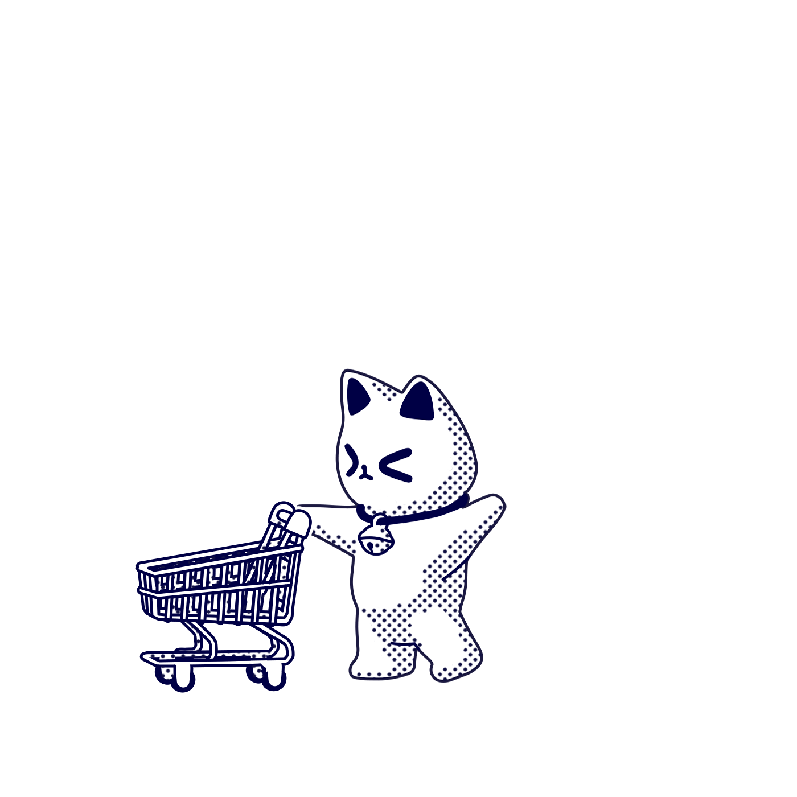

Date
2019 — 2020
Participation
80%
Services
E-Commerce, Online Store
Tools
Photoshop, Illust, XD, Html, Css
새로운 소비 세대는 연결을 원하지만, 남들이 규정하는 좋은 제품이 아니라 자신만의 기준과 취향에 맞는 제품, 브랜드를 선호하고 또 자신의 취향을 적극적으로 어필합니다.
마치고양이의 성향과 닮았다고 해서, '캣슈머'(Cat + Consumer = Cat-sumer)라고 합니다.
새로운 소비의 중심에 선 캣슈머들과 어떤 모습으로 커뮤니케이션해야 할지 고민하였습니다.
Good Choice는 일본에서 판매되고 있는 제품을 전 세계에 판매하는 커머스 플랫폼입니다.
Good Choice는 '좋은 상품을 골라준다.'와 '좋은 상품을 선택했다.' 추천과 구매 두 가지를 의미하며,
인형 뽑기의 집게를 브랜드의 이미지로 선정하여 '선택'의 의미를 직관적으로 표현하였습니다.
브랜드의 심벌은 캣슈머의 이미지를 통해 커머스 플랫폼의 목적을 보여주고, 인형 뽑기와 도라에몽의 방울을 통해 일본의 이미지가 연상될 수 있게 제작하였습니다.
실물과 같은 느낌의 3D 그래픽으로 자연스럽게 시선을 끌며, 고객들이 트렌디한 시각적 경험을 느낄 수 있도록 제공하였습니다.
실물과 같은 느낌의 3D 그래픽으로 자연스럽게 시선을 끌며, 고객들이 트렌디한 시각적 경험을 느낄 수 있도록 제공하였습니다.
브랜드 자체 캐릭터를 도입하여 구매자와 더욱더 효과적이고 지속해서 소통하고자 제작하였습니다.
캐릭터는 `캣슈머`(Cat + Consumer = Cat-sumer)와 마네키네코 (Maneki-neko) 두 가지를 상징하며,
캣슈머들과 같은 고양이로 경계심을 줄여주고, 일본 상품을 판매하는 브랜드의 특성을 보여주고자 하였습니다.
Good Choice의 비주얼은 입체적이고 트렌디한 시각적 경험을 활용하여 차별화된 브랜드 아이덴티티를 구축하였습니다.
새로운 커머스 플랫폼의 경험을 만들기 위해 커머스 플랫폼에 대한 정의를 내리고,
자주 내점하고 싶어지고, 볼거리가 풍부하고, 원하는 상품을 재빠르게 찾을 수 있도록 생각해 보았습니다.
구매자들은 온라인쇼핑 시 목적의 유무에 따라 행동이 조금씩 다른 점을 발견할 수 있었습니다.
목적성 구매자 (정확한 구매 품목을 결정한 구매자)ㅡ15%
준목적성 구매자 (구매할 품목군만 결정한 구매자)ㅡ35%
비 목적성 구매자 (즉흥적 상황에 따른 구매자)ㅡ50%
구매자 유형 중 아이템이나 브랜드를 선택하지 않고 구매하는 고객이 80% 이상이 됩니다.
이러한 비목적성 구매자들에게 효과적인 마케팅이 권유마케팅입니다.
권유, 추천 알고리즘 등으로 1인당 구매금액을 20% 정도 상승시킬 수 있기 때문입니다.
상품뿐만 아니라 콘텐츠 큐레이션을 통해 구매자에게 알맞은 제품과
딜을 소개하여 구매자가 더 나은 선택을 할 수 있도록 도움을 줍니다.
이를 기준으로 '개인화 큐레이션 커머스'를 목표로 하였습니다. 개인화 큐레이션 서비스는 고객에게 '무엇을 좋아하시나요?'라고 명시적으로 묻지 않습니다. 대신 고객이 그동안 구매하거나 사용해 왔던, 또는 관심을 보였던 상품, 서비스 등의 이력을 분석해서 개개인의 선호 성향을 파악하고 좋아할 만한 상품을 추천해 줍니다. 그 정보는 자신과 선호 성향이 비슷한 다른 사용자에게 추천하는 협업 필터링을 통해 공유됩니다.
기존 자사 몰의 추천 알고리즘별 클릭 수를 분석해 보니,
유저들의 유사성을 기반으로 한 알고리즘 보다
상품 아이템 기준의 유사도나 관련성에 기반한 알고리즘이 효과가 좋았던 것으로 파악됩니다.
자사몰은 다양한 상품 구색과 카테고리가 잘 분류되어 있지만 유저 트래픽이 아직 성장 중인 커머스 플랫폼입니다.
성과를 높이기 위해서는 특정 알고리즘을 첫 방문자와 같은 비목적성 구매자에만 적용해 보는 전략을 펼치는 것을 고려해 볼 수 있습니다.
연관 상품 추천 ㅡ 상품 통합하여 조회한 상품에 적합한 소유품 추천
고객 세그먼트 상품 추천 ㅡ 고객 행동 기반 특정 고객 세그먼트에 적합한 상품 추천
통계기반 알고리즘 ㅡ 구매 전환될 확률 높은 인기 상품 추천
유사 고객 상품 추천 ㅡ 고객 행동 분석 바탕으로 개개인에게 최적화된 상품 추천
새로운 이커머스 플랫폼 경험을 하며 흥미와 즐거움을 주는 것을 목적으로 하였습니다.
‘즐거움’이라는 감성의 시각적 표현을 위해, 흥미를 유발하는 요소의 그래픽 디자인의 표현연구를 진행하였습니다.
콘텐츠와 네비게이션을 위한 충분한 공간을 확보하기 위해 서로 다른 레이아웃을 사용하였습니다. 기기별 서로 다른 그리드가 적용되지만, 패딩과 열 크기 등 기기별 그리드의 변화에 쉽게 디자인하였습니다.
알고리즘을 통해 구매자 개인의 취향에 맞춘 상품과 전략을 메인페이지에 노출하는 방법으로 `개인 큐레이션 서비스`를 제공하였습니다.
성별, 나이 등 다양한 개인 속성 정보를 기반으로 해당 속성에 가까운 상품을 직접 추천하거나,
유사한 속성을 지닌 사람이 선호하는 상품들을 제안하는 방식입니다.
인형 뽑기의 특징이 두드러지게 표현하였습니다.
동영상과 움직이는 그래픽 요소를 활용해서 구매자들의 흥미를 유발하는 것을 목적으로 하였습니다.
미디어 콘텐츠를 통해 MD는 상품을 상세하게 선보이거나 구매자들은 상품에 관한 생각을 자유롭게 표현할 수 있습니다.
MD 초이스 상품, 인기 상품 등으로 구매자들의 선택 피로도를 덜어주고 비목적성 구매자들에겐 `추천`을 통해 선택의 어려움을 도와줍니다.
구매자에게 재미와 즐거움을 즐길 수 있도록 상품과 전략을 브랜드 캐릭터와 함께 제공하였습니다.
브랜드 캐릭터를 노출시켜 구매자의 호감도와 신뢰도를 상승시켜주고,
브랜드 아이덴티티를 전달하고 동시에 제품의 가치를 높여주게 하였습니다.
—
Thanks for watching .
Project Inquiries:
jwpg018241@gmail.com
—